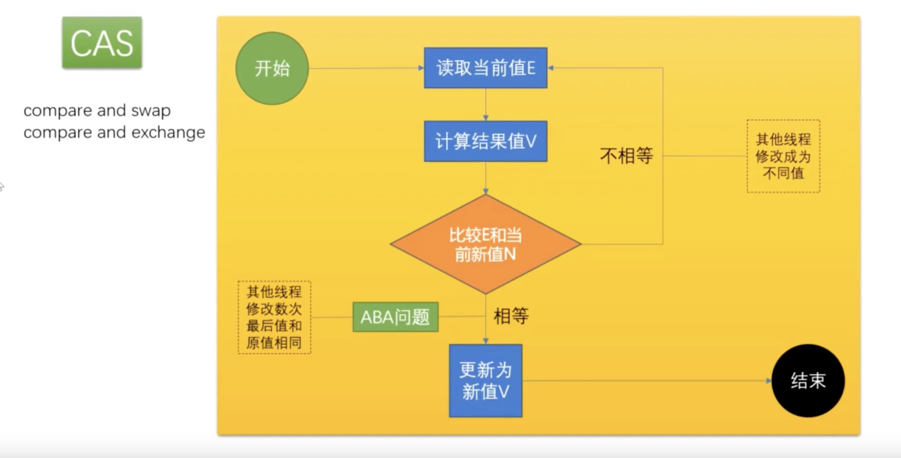
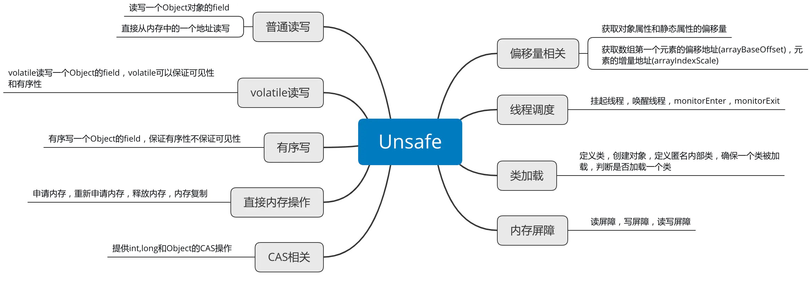
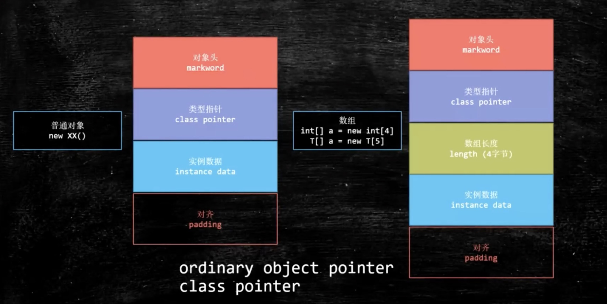
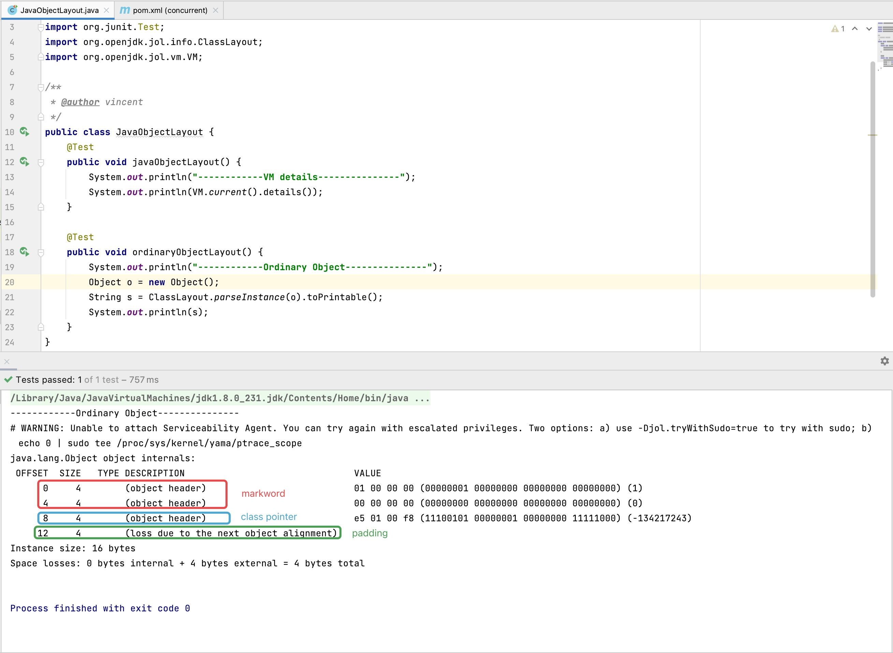
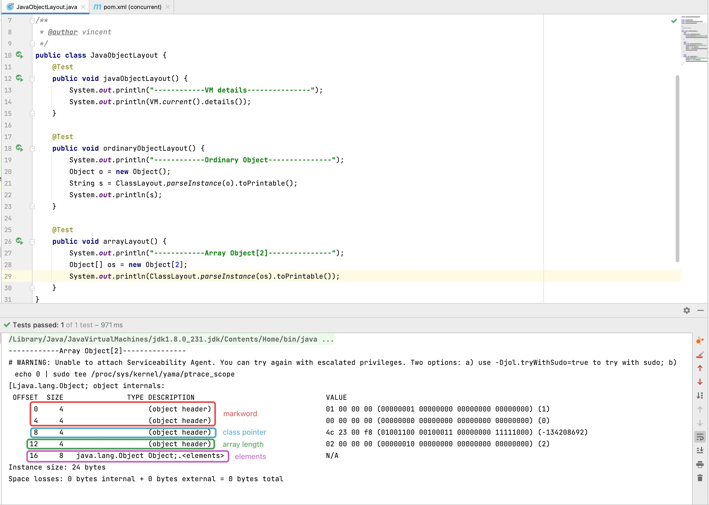

用户态与内核态
JDK 早期，synchronized 叫做重量级锁， 因为申请锁资源必须通过 kernel（指大多数操作系统的核心部分），系统调用。1
2
3
4
5
6
7
8
9
10
11
12
13
14
15
16
17
18
19
20
21;hello.asm
;write(int fd, const void *buffer, size_t nbytes)
section data
msg db "Hello", 0xA
len equ $ - msg
section .text
global _start
_start:
mov edx, len
mov ecx, msg
mov ebx, 1 ;文件描述符1 std_out
mov eax, 4 ;write函数系统调用号 4
int 0x80
mov ebx, 0
mov eax, 1 ;exit函数系统调用号
int 0x80
CAS
CAS：Compare And Swap（Compare And Exchange），一般被称为：自旋（自旋锁）、无锁（无重量锁）。因为经常配合循环操作，直到完成为止，所以泛指一类操作。cas(v, a, b)，变量 v，期待值 a, 修改值 b。
说到 CAS，一般都会被问到 — ABA 问题。举个例子：你的女朋友在离开你的这段儿时间经历了别的人，自旋就是你空转等待，一直等到她接纳你为止。那如何解决这个问题呢？通常解决办法 — 版本号 AtomicStampedReference（或者说又叫做原子操作），基础类型简单值不需要版本号。

Unsafe 类
Java 和 C++ 语言的一个重要区别就是 Java 中我们无法直接操作一块内存区域，不能像 C++ 中那样可以自己申请内存和释放内存。Java 中的 Unsafe 类为我们提供了类似 C++ 手动管理内存的能力。Unsafe 类，全限定名是 sun.misc.Unsafe，从名字中我们可以看出来这个类对普通程序员来说是“危险”的，一般应用开发者不会用到这个类。Unsafe 的功能如下图：

其具体功能在这里就不细说了，后续博主会另开一篇博文来探讨 Unsafe 类。这里主要讲解的是，Unsafe 这个类的 CAS 底层操作原理。所有的原子类的操作都是使用的 Unsafe 中的 CompareAndSwap 方法，这个方法的原理就是上面所说的 CAS 操作的原理，而这个方法是 Unsafe 这个类提供的。所以原子类的底层原理就是 CAS。以 AtomicInteger 类为例：
1 | public final int incrementAndGet() { |
Unsafe:1
public final native boolean compareAndSwapInt(Object var1, long var2, int var4, int var5);
运用：1
2
3
4
5
6
7
8
9
10
11
12
13
14
15
16
17
18
19
20
21
22
23
24
25
26
27
28package com.mashibing.jol;
import sun.misc.Unsafe;
import java.lang.reflect.Field;
public class T02_TestUnsafe {
int i = 0;
private static T02_TestUnsafe t = new T02_TestUnsafe();
public static void main(String[] args) throws Exception {
//Unsafe unsafe = Unsafe.getUnsafe();
Field unsafeField = Unsafe.class.getDeclaredFields()[0];
unsafeField.setAccessible(true);
Unsafe unsafe = (Unsafe) unsafeField.get(null);
Field f = T02_TestUnsafe.class.getDeclaredField("i");
long offset = unsafe.objectFieldOffset(f);
System.out.println(offset);
boolean success = unsafe.compareAndSwapInt(t, offset, 0, 1);
System.out.println(success);
System.out.println(t.i);
//unsafe.compareAndSwapInt()
}
}
jdk8u（jdk 的原文件）：unsafe.cpp（c++），cmpxchg = compare and exchange。
1 | UNSAFE_ENTRY(jboolean, Unsafe_CompareAndSwapInt(JNIEnv *env, jobject unsafe, jobject obj, jlong offset, jint e, jint x)) |
jdk8u（jdk 的原文件）：atomic_linux_x86.inline.hpp，is_MP = Multi Processor。
1 | inline jint Atomic::cmpxchg (jint exchange_value, volatile jint* dest, jint compare_value) { |
jdk8u（jdk 的原文件）：os.hpp，is_MP()。
1 | static inline bool is_MP() { |
jdk8u（jdk 的原文件）：atomic_linux_x86.inline.hpp。
1 |
最终实现：cmpxchg = cas 修改变量值，注意 cmpxchg cpu 指令或者说 cas，它并不是具备原子操作，那为什么 compareAndSet() 方法具备原子性呢，那是因为这个该方法底层调用的 cpu 指令，分别是两个指令 lock 和 cmpxchg。如下：1
lock cmpxchg 指令
硬件：lock 指令在执行后面指令的时候锁定一个北桥信号（不采用锁总线的方式），通俗易懂的讲的话就是，加了 lock 指令后，其他 cpu 不允许对 cmpxchg 指令中的值进行修改。
对象在内存中的存储布局
JOL：Java Object Layout
可以通过以下工具来查看 Java 对象的布局：JOL = Java Object Layout。1
2
3
4
5
6
7
8<dependencies>
<!-- https://mvnrepository.com/artifact/org.openjdk.jol/jol-core -->
<dependency>
<groupId>org.openjdk.jol</groupId>
<artifactId>jol-core</artifactId>
<version>0.10</version>
</dependency>
</dependencies>
在开始之前我们先来看个例子：先看下在 JVM 中，一个引用的长度占用多少字节。1
2
3
4
5
6
7
8import org.openjdk.jol.vm.VM;
public class JavaObjectLayout {
public static void main(String[] args) {
System.out.println("------------VM details---------------");
System.out.println(VM.current().details());
}
}
这个 details() 方法由 JOL 类库中的 HotspotUnsafe 类实现，源码如下：1
2
3
4
5
6
7
8
9
10
11
12
13
14
15
16
17
18
19
20
21
22
23
24
25
26
27
28
29
30
31
32
33
34
35
36
37
38
39
40
41
42
43
44
45
46
47
48
49
50
51
52
53
54
55
56
57
58
59
60
61
62
public String details() {
StringWriter sw = new StringWriter();
PrintWriter out = new PrintWriter(sw);
out.println("# Running " + (addressSize * 8) + "-bit HotSpot VM.");
if (compressedOopsEnabled) {
if (narrowOopBase != 0) {
out.println("# Using compressed oop with " +
formatAddressAsHexByAddressSize(narrowOopBase) + " base address and " +
narrowOopShift + "-bit shift.");
} else {
out.println("# Using compressed oop with " + narrowOopShift + "-bit shift.");
}
}
if (compressedKlassOopsEnabled) {
if (narrowKlassBase != 0) {
out.println("# Using compressed klass with " +
formatAddressAsHexByAddressSize(narrowKlassBase) + " base address and " +
narrowKlassShift + "-bit shift.");
} else {
out.println("# Using compressed klass with " + narrowKlassShift + "-bit shift.");
}
}
if (!isAccurate && (compressedOopsEnabled || compressedKlassOopsEnabled)) {
out.println("# WARNING | Compressed references base/shifts are guessed by the experiment!");
out.println("# WARNING | Therefore, computed addresses are just guesses, and ARE NOT RELIABLE.");
out.println("# WARNING | Make sure to attach Serviceability Agent to get the reliable addresses.");
}
out.println("# Objects are " + objectAlignment + " bytes aligned.");
out.printf("# %-19s: %d, %d, %d, %d, %d, %d, %d, %d, %d [bytes]%n",
"Field sizes by type",
oopSize,
sizes.booleanSize,
sizes.byteSize,
sizes.charSize,
sizes.shortSize,
sizes.intSize,
sizes.floatSize,
sizes.longSize,
sizes.doubleSize
);
out.printf("# %-19s: %d, %d, %d, %d, %d, %d, %d, %d, %d [bytes]%n",
"Array element sizes",
U.arrayIndexScale(Object[].class),
U.arrayIndexScale(boolean[].class),
U.arrayIndexScale(byte[].class),
U.arrayIndexScale(char[].class),
U.arrayIndexScale(short[].class),
U.arrayIndexScale(int[].class),
U.arrayIndexScale(float[].class),
U.arrayIndexScale(long[].class),
U.arrayIndexScale(double[].class)
);
out.close();
return sw.toString();
}
运行结果：1
2
3
4
5
6
7
8
9
10
11------------VM details---------------
# WARNING: Unable to attach Serviceability Agent. You can try again with escalated privileges. Two options: a) use -Djol.tryWithSudo=true to try with sudo; b) echo 0 | sudo tee /proc/sys/kernel/yama/ptrace_scope
# Running 64-bit HotSpot VM.
# Using compressed oop with 3-bit shift.
# Using compressed klass with 3-bit shift.
# WARNING | Compressed references base/shifts are guessed by the experiment!
# WARNING | Therefore, computed addresses are just guesses, and ARE NOT RELIABLE.
# WARNING | Make sure to attach Serviceability Agent to get the reliable addresses.
# Objects are 8 bytes aligned.
# Field sizes by type: 4, 1, 1, 2, 2, 4, 4, 8, 8 [bytes]
# Array element sizes: 4, 1, 1, 2, 2, 4, 4, 8, 8 [bytes]
运行结果中可以看到：
- JVM 是64位的 HotSpot。
- 默认开启 oop（Ordinary Object Pointer，普通对象指针）压缩，可设置 JVM 参数
-XX:-UseCompressedOops关闭指针压缩。 - 默认开启 Class pointer（类对象指针）的压缩，可设置 JVM 参数
-XX:-UseCompressedClassPointer关闭指针压缩。 - 对象按照8字节来对齐。
- 对象属性（即上方的 Field sizes by type）的长度：4字节（oopSize, 普通对象引用），其余的基本类型的字节数和java中一致。
- 6.数组类型（即上方的 Array element sizes）的长度：4字节（引用的长度），其余的基本类型的字节数和 java 中一致。
由此可以得出，当前 JVM 使用4字节保存对象的引用。（关于 oop 压缩和 class pointer 的压缩，可以参考这篇文章：https://blog.csdn.net/a469517790/article/details/104916916 ）
Java 对象在内存中的布局
先来看张图：

普通对象布局
| 结构 | 字节数 | 说明 |
|---|---|---|
| markword | 8Bytes | 用于标记锁信息、GC 信息、IdentityHashCode 等 |
| klass pointer 类指针 | 4Bytes | 用于标记该对象是哪个 Class 的实例 开启内存压缩（-XX:+UseCompressedClassPointer）后为4字节，默认是开启的， 不开启内存压缩为8个字节（下面有例子） |
| 成员变量 | 视成员变量的类型和数量而定 | 如果没有成员变量，则这一块为空 |
| padding 对齐 | 视上述字节而定 | 一个对象占用的字节数必须是8的倍数，不足的用 padding 对齐 |
接下来看看普通对象的布局案例：1
2
3
4
5
6
7
public void ordinaryObjectLayout() {
System.out.println("------------Object---------------");
Object o = new Object();
String s = ClassLayout.parseInstance(o).toPrintable();
System.out.println(s);
}
运行结果：1
2
3
4
5
6
7
8
9
10------------Ordinary Object---------------
# WARNING: Unable to attach Serviceability Agent. You can try again with escalated privileges. Two options: a) use -Djol.tryWithSudo=true to try with sudo; b) echo 0 | sudo tee /proc/sys/kernel/yama/ptrace_scope
java.lang.Object object internals:
OFFSET SIZE TYPE DESCRIPTION VALUE
0 4 (object header) 01 00 00 00 (00000001 00000000 00000000 00000000) (1)
4 4 (object header) 00 00 00 00 (00000000 00000000 00000000 00000000) (0)
8 4 (object header) e5 01 00 f8 (11100101 00000001 00000000 11111000) (-134217243)
12 4 (loss due to the next object alignment)
Instance size: 16 bytes
Space losses: 0 bytes internal + 4 bytes external = 4 bytes total

可以看到，前12个字节都是 object header，什么是 object header？引用 OpenJDK 的专业术语的原文：
object header: Common structure at the beginning of every GC-managed heap object. (Every oop points to an object header.) Includes fundamental information about the heap object’s layout, type, GC state, synchronization state, and identity hash code. Consists of two words. In arrays it is immediately followed by a length field. Note that both Java objects and VM-internal objects have a common object header format.
对象头是由 GC 管理的，堆中的 Java 对象的开始部分，由两个部分组成：mark word 和 klass pointer。
mark word: The first word of every object header. Usually a set of bitfields including synchronization state and identity hash code. May also be a pointer (with characteristic low bit encoding) to synchronization related information. During GC, may contain GC state bits.
klass pointer: The second word of every object header. Points to another object (a metaobject) which describes the layout and behavior of the original object. For Java objects, the “klass” contains a C++ style “vtable”.
所以，这12字节中前8个字节（前两行）是 markword，后4个字节（第三行）是对象指针。由于 Object 类没有成员变量，这块为空，因此最后4个字节（第四行）是对齐。
注意： 如果执行的时候使用 JVM 参数 -XX:-UseCompressedClassPointers 关闭类指针压缩，则 class pointer 将占用8字节。
数组对象布局
| 结构 | 字节数 | 说明 |
|---|---|---|
| markword | 8Bytes | 用于标记锁信息、GC 信息、IdentityHashCode 等。 |
| klass pointer 类指针 | 4Bytes | 用于标记该对象是哪个 Class 的实例 开启内存压缩后为4字节，默认是开启的。 通过（-XX:+UseCompressedClassPointer）可以关闭内存压缩，为8个字节（下面有例子）。 |
| 数组长度 | 4Bytes | 标记数组有多少个元素 |
| 数组内容 | 根据数组类型 m 和长度 n 而定，长度为 m*n | 如果元素为基本类型，比如 byte、boolean、short、char、int、long、double，则 m 为对应的基本类型长度；如果元素为对象，m 是4字节的引用（前文已经提到：当前 JVM 使用4字节保存对象的引用）；如果数组长度为0，这一块为空。 |
| padding 对齐 | 视上述字节而定 | 一个对象占用的字节数必须是8的倍数，不足的用 padding 对齐。 |
同理可以查看数组对象的布局：1
2
3
4
5
6
public void arrayLayout() {
System.out.println("------------Array Object[2]---------------");
Object[] os = new Object[2];
System.out.println(ClassLayout.parseInstance(os).toPrintable());
}
运行结果：1
2
3
4
5
6
7
8
9
10
11------------Array Object[2]---------------
# WARNING: Unable to attach Serviceability Agent. You can try again with escalated privileges. Two options: a) use -Djol.tryWithSudo=true to try with sudo; b) echo 0 | sudo tee /proc/sys/kernel/yama/ptrace_scope
[Ljava.lang.Object; object internals:
OFFSET SIZE TYPE DESCRIPTION VALUE
0 4 (object header) 01 00 00 00 (00000001 00000000 00000000 00000000) (1)
4 4 (object header) 00 00 00 00 (00000000 00000000 00000000 00000000) (0)
8 4 (object header) 4c 23 00 f8 (01001100 00100011 00000000 11111000) (-134208692)
12 4 (object header) 02 00 00 00 (00000010 00000000 00000000 00000000) (2)
16 8 java.lang.Object Object;.<elements> N/A
Instance size: 24 bytes
Space losses: 0 bytes internal + 0 bytes external = 0 bytes total

可以看到，从偏移量12开始，数组长度为4字节（上文 object header 的引用里提到，这两个部分之后，紧接着就是数组长度），值为2，然后16字节开始，为2x4=8字节的数组内容（上文提到：每个对象的引用长度为4字节）。
加上 syncronized 关键字
现在用 syncronized 对该对象加锁，看看 markword 有什么变化。1
2
3
4
5
6
7
8
public void syncronizedLayout(){
System.out.println("------------syncronized---------------");
Object o = new Object();
synchronized (o) {
System.out.println(ClassLayout.parseInstance(o).toPrintable());
}
}
运行结果：1
2
3
4
5
6
7
8
9
10------------syncronized Object---------------
# WARNING: Unable to attach Serviceability Agent. You can try again with escalated privileges. Two options: a) use -Djol.tryWithSudo=true to try with sudo; b) echo 0 | sudo tee /proc/sys/kernel/yama/ptrace_scope
java.lang.Object object internals:
OFFSET SIZE TYPE DESCRIPTION VALUE
0 4 (object header) e0 08 58 07 (11100000 00001000 01011000 00000111) (123209952)
4 4 (object header) 00 70 00 00 (00000000 01110000 00000000 00000000) (28672)
8 4 (object header) e5 01 00 f8 (11100101 00000001 00000000 11111000) (-134217243)
12 4 (loss due to the next object alignment)
Instance size: 16 bytes
Space losses: 0 bytes internal + 4 bytes external = 4 bytes total
可以看到，markword 的前4个字节的内容发生了变化。因此，syncronized 加锁后，会修改了该对象的 markword。
jdk8u（jdk 的原文件）: markOop.hpp（markword）
2
3
4
5
6
7
8
9
10
11
12
13
14
15
16
17
18
19
20
//
// 32 bits:
// --------
// hash:25 ------------>| age:4 biased_lock:1 lock:2 (normal object)
// JavaThread*:23 epoch:2 age:4 biased_lock:1 lock:2 (biased object)
// size:32 ------------------------------------------>| (CMS free block)
// PromotedObject*:29 ---------->| promo_bits:3 ----->| (CMS promoted object)
//
// 64 bits:
// --------
// unused:25 hash:31 -->| unused:1 age:4 biased_lock:1 lock:2 (normal object)
// JavaThread*:54 epoch:2 unused:1 age:4 biased_lock:1 lock:2 (biased object)
// PromotedObject*:61 --------------------->| promo_bits:3 ----->| (CMS promoted object)
// size:64 ----------------------------------------------------->| (CMS free block)
//
// unused:25 hash:31 -->| cms_free:1 age:4 biased_lock:1 lock:2 (COOPs && normal object)
// JavaThread*:54 epoch:2 cms_free:1 age:4 biased_lock:1 lock:2 (COOPs && biased object)
// narrowOop:32 unused:24 cms_free:1 unused:4 promo_bits:3 ----->| (COOPs && CMS promoted object)
// unused:21 size:35 -->| cms_free:1 unused:7 ------------------>| (COOPs && CMS free block)
锁升级过程
锁升级过程：new -> 偏向锁 -> 轻量级锁 （无锁, 自旋锁，自适应自旋）-> 重量级锁。


synchronized 优化的过程和 markword 息息相关。用 markword 中最低的三位代表锁状态，其中1位是偏向锁位，两位是普通锁位。
Object o = new Object();，锁 = 0 01 无锁态。注意：如果偏向锁打开，默认是匿名偏向状态。o.hashCode();，001 + hashcode1
2
3little endian
00000001 10101101 00110100 00110110
01011001 00000000 00000000 000000001
2
3big endian
00000000 00000000 00000000 01011001
00110110 00110100 10101101 00000000默认情况，偏向锁有个延时，默认是4秒。why? 因为 JVM 虚拟机自己有一些默认启动的线程，里面有好多 sync 代码，这些 sync 代码启动时就知道肯定会有竞争，如果使用偏向锁，就会造成偏向锁不断的进行锁撤销和锁升级的操作，效率较低。下面参数可以控制偏向锁的延时启动时间：
1
-XX:BiasedLockingStartupDelay=0
如果设定上述参数，
new Object () - > 101 偏向锁 -> 线程ID为0 -> Anonymous BiasedLock。打开偏向锁，new 出来的对象，默认就是一个可偏向匿名对象101。如果有线程上锁，上偏向锁，指的就是把 markword 的线程 ID 改为自己线程 ID 的过程。偏向锁不可重偏向、批量偏向、批量撤销。
如果有线程竞争，撤销偏向锁，升级轻量级锁。线程在自己的线程栈生成 LockRecord，用 CAS 操作将 markword 设置为指向自己这个线程的 LR 的指针，设置成功者得到锁。
如果竞争加剧，竞争加剧。有线程超过10次自旋（
-XX:PreBlockSpin）或者自旋线程数超过 CPU 核数的一半（1.6之后，加入自适应自旋Adapative Self Spinning，JVM 自己控制）。升级重量级锁，向操作系统申请资源，linux mutex CPU 从3级-0级系统调用，线程挂起，进入等待队列，等待操作系统的调度，然后再映射回用户空间。
注意： 以上实验环境是 JDK 11，打开就是偏向锁，而 JDK 8默认对象头是无锁。偏向锁默认是打开的，但是有一个时延，如果要观察到偏向锁，应该设定参数。
为什么有自旋锁还需要重量级锁？
自旋是消耗 CPU 资源的，如果锁的时间长，或者自旋线程多，CPU 会被大量消耗。重量级锁有等待队列，所有拿不到锁的进入等待队列，不需要消耗 CPU 资源。
偏向锁是否一定比自旋锁效率高？
不一定，在明确知道会有多线程竞争的情况下，偏向锁肯定会涉及锁撤销，这时候直接使用自旋锁。JVM 启动过程，会有很多线程竞争（明确），所以默认情况启动时不打开偏向锁，过一段儿时间再打开。
如果计算过对象的 hashCode，则对象无法进入偏向状态！
轻量级锁重量级锁的 hashCode 存在与什么地方？答案：线程栈中，轻量级锁的 LR 中，或是代表重量级锁的 ObjectMonitor 的成员中。
关于 epoch：（不重要）
批量重偏向与批量撤销渊源：从偏向锁的加锁解锁过程中可看出，当只有一个线程反复进入同步块时，偏向锁带来的性能开销基本可以忽略，但是当有其他线程尝试获得锁时，就需要等到 safe point 时，再将偏向锁撤销为无锁状态或升级为轻量级，会消耗一定的性能，所以在多线程竞争频繁的情况下，偏向锁不仅不能提高性能，还会导致性能下降。于是，就有了批量重偏向与批量撤销的机制。
原理以 class 为单位，为每个 class 维护解决场景批量重偏向（bulk rebias）机制是为了解决：一个线程创建了大量对象并执行了初始的同步操作，后来另一个线程也来将这些对象作为锁对象进行操作，这样会导致大量的偏向锁撤销操作。批量撤销（bulk revoke）机制是为了解决：在明显多线程竞争剧烈的场景下使用偏向锁是不合适的。
一个偏向锁撤销计数器，每一次该 class 的对象发生偏向撤销操作时，该计数器+1，当这个值达到重偏向阈值（默认20）时，JVM 就认为该 class 的偏向锁有问题，因此会进行批量重偏向。每个 class 对象会有一个对应的 epoch 字段，每个处于偏向锁状态对象的 Mark Word 中也有该字段，其初始值为创建该对象时 class 中的 epoch 的值。每次发生批量重偏向时，就将该值+1，同时遍历 JVM 中所有线程的栈，找到该 class 所有正处于加锁状态的偏向锁，将其 epoch 字段改为新值。下次获得锁时，发现当前对象的 epoch 值和 class 的 epoch 不相等，那就算当前已经偏向了其他线程，也不会执行撤销操作，而是直接通过 CAS 操作将其 Mark Word 的 Thread Id 改成当前线程 Id。当达到重偏向阈值后，假设该 class 计数器继续增长，当其达到批量撤销的阈值后（默认40），JVM 就认为该 class 的使用场景存在多线程竞争，会标记该 class 为不可偏向，之后，对于该 class 的锁，直接走轻量级锁的逻辑。
简单总结
锁升级的过程。JDK 较早的版本，OS 的资源，互斥量用户态 -> 内核态的转换重量级，效率比较低。现代版本进行了优化，无锁 -> 偏向锁 -> 轻量级锁（自旋锁）-> 重量级锁。
偏向锁 markword 上记录当前线程指针，下次同一个线程加锁的时候，不需要争用，只需要判断线程指针是否同一个，所以，偏向锁，偏向加锁的第一个线程 。hashCode 备份在线程栈上，线程销毁，锁降级为无锁。
有争用，锁升级为轻量级锁，每个线程有自己的 LockRecord 在自己的线程栈上，用 CAS 去争用 markword 的 LR 的指针，指针指向哪个线程的 LR，哪个线程就拥有锁。
自旋超过10次，升级为重量级锁。如果太多线程自旋 CPU 消耗过大，不如升级为重量级锁，进入等待队列（不消耗 CPU -XX:PreBlockSpin）。
自旋锁在 JDK 1.4.2 中引入，使用 -XX:+UseSpinning 来开启。JDK 6 中变为默认开启，并且引入了自适应的自旋锁（适应性自旋锁）。自适应自旋锁意味着自旋的时间（次数）不再固定，而是由前一次在同一个锁上的自旋时间及锁的拥有者的状态来决定。如果在同一个锁对象上，自旋等待刚刚成功获得过锁，并且持有锁的线程正在运行中，那么虚拟机就会认为这次自旋也是很有可能再次成功，进而它将允许自旋等待持续相对更长的时间。如果对于某个锁，自旋很少成功获得过，那在以后尝试获取这个锁时将可能省略掉自旋过程，直接阻塞线程，避免浪费处理器资源。
偏向锁由于有锁撤销的过程 revoke，会消耗系统资源.所以，在锁争用特别激烈的时候，用偏向锁未必效率高。还不如直接使用轻量级锁。
锁重入
sychronized 是可重入锁，重入次数必须记录，因为要解锁几次必须得对应。
synchronized vs Lock（CAS）
在高争用、高耗时的环境下，synchronized 效率更高。在低争用、低耗时的环境下，CAS 效率更高。synchronized 到重量级之后是等待队列，不消耗 CPU，CAS 等待期间消耗 CPU。当然一切以实测为准。
锁消除 lock eliminate
1 | public void add(String str1,String str2){ |
我们都知道 StringBuffer 是线程安全的，因为它的关键方法都是被 synchronized 修饰过的，但我们看上面这段代码，我们会发现，sb 这个引用只会在 add 方法中使用，不可能被其它线程引用（因为是局部变量，栈私有），因此 sb 是不可能共享的资源，JVM 会自动消除 StringBuffer 对象内部的锁。
锁粗化 lock coarsening
1 | public String test(String str){ |
JVM 会检测到这样一连串的操作都对同一个对象加锁（while 循环内 100 次执行 append，没有锁粗化的就要进行 100 次加锁、解锁），此时 JVM 就会将加锁的范围粗化到这一连串的操作的外部（比如 while 虚幻体外），使得这一连串操作只需要加一次锁即可。
锁降级（不重要）
其实，只被 VMThread 访问，降级也就没啥意义了。所以可以简单认为锁降级不存在！可参考：https://www.zhihu.com/question/63859501
超线程
一个 ALU + 两组 Registers + PC。可参考：http://openjdk.java.net/groups/hotspot/docs/HotSpotGlossary.html
If you like this blog or find it useful for you, you are welcome to comment on it. You are also welcome to share this blog, so that more people can participate in it. If the images used in the blog infringe your copyright, please contact the author to delete them. Thank you !